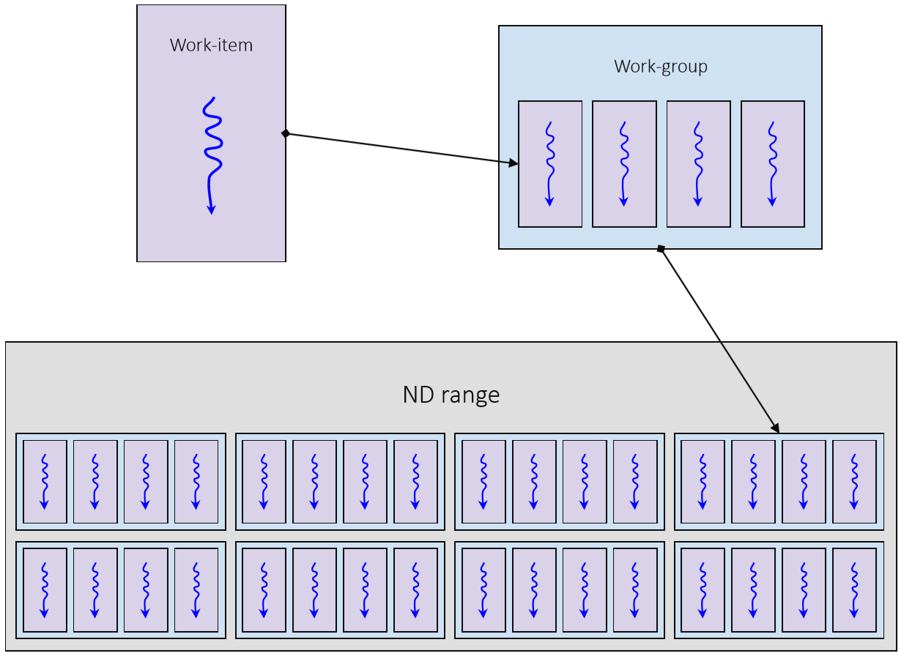
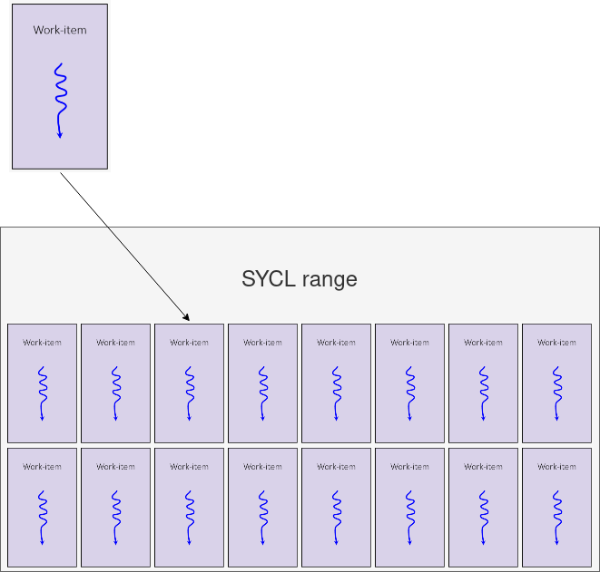
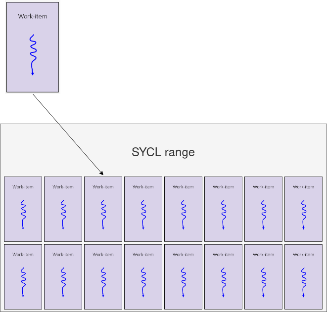

SYCL and the SYCL logo are trademarks of the Khronos Group Inc.
#### Task vs data parallelism

* **Task parallelism** is where you have several,
possibly distinct tasks executing in parallel.
* In task parallelism you generally optimize for latency.
* **Data parallelism** is where you have the same
task being performed on multiple elements of data.
* In data parallelism you generally optimize for throughput.
#### Vector processors
* Many processors are vector processors, which means
they can naturally perform data parallelism.
* GPUs are designed to be parallel.
* CPUs have SIMD instructions which perform the
same instruction on a number elements of data.
#### SPMD model for describing data parallelism
Sequential CPU code
void calc(const int in[], int out[]) {
// all iterations are run in the same
// thread in a loop
for (int i = 0; i < 1024; i++){
out[i] = in[i] * in[i];
}
}
// calc(...) is invoked just once and all
// iterations are performed inline
calc(in, out);
Parallel SPMD code
void calc(const int in[], int out[], int id) {
// function is described in terms of
// a single iteration
out[id] = in[id] * in[id];
}
// parallel_for invokes calc(...) multiple
// times in parallel
parallel_for(calc, in, out, 1024);
#### SYCL execution model
* In SYCL kernel functions are executed by
**work- items**.
* You can think of a work-item as a thread of
execution.
* Each work-item will execute a SYCL kernel function from start to end.
* A work-item can run on CPU threads, SIMD lanes,
GPU threads, or any other kind of processing
element.

#### SYCL execution model
* SYCL kernel functions are invoked within an **nd-range**
* An nd-range has a number of work-groups and subsequently a number of work-items
* Work-groups always have the same number of work-items

#### SYCL execution model
* The nd-range describes an **iteration space**: how it is composed in terms of work-groups and work-items
* An nd-range can have 1, 2 or 3 dimensions
* An nd-range has two components
* The **global-range** describes the total number of work-items in each dimension
* The **local-range** describes the number of work-items in a work-group in each dimension

#### SYCL execution model
* Each invocation in the iteration space of an nd-range is a work-item
* Each invocation knows which work-item it is on and can query certain information about its position in the nd-range
* Each work-item has the following:
* **Global range**: {12, 12}
* **Global id**: {5, 6}
* **Group range**: {3, 3}
* **Group id**: {1, 1}
* **Local range**: {4, 4}
* **Local id**: {1, 2}

#### SYCL execution model
Typically an nd-range invocation SYCL will execute the SYCL kernel function on a very large number of work-items, often in the thousands

#### SYCL execution model
* Multiple work-items will generally execute concurrently
* On vector hardware this is often done in lock-step, with
neighboring work-items executing the same instruction at
all times
* The number of work-items that will execute concurrently can vary from one device to another
* Work-items will be batched along with other work-items in the same work-group
* The order work-items and work-groups are executed in is implementation defined

#### SYCL execution model
* Work-items in a work-group can be synchronized using a work-group barrier
* All work-items within a work-group must reach the barrier before any can continue on

#### SYCL execution model
* SYCL does not support synchronizing across all work-items in the nd-range
* The only way to do this is to split the computation into separate SYCL kernel functions

#### SYCL execution model
* SYCL also provides a simplified execution model with `sycl::range` in place of `sycl::nd_range`
* Caller only provides the global range
* Local range is decided by the runtime and cannot be inspected
* No synchronization is possible between work items
* Useful for simple problems which don't require synchronization, local memory and ultimate performance
* Runtime may not always have enough information to choose the best-performing size



#### Parallel_for
cgh.parallel_for<my_kernel>(nd_range{{1024, 16}, {32, 4}},
[=](nd_item<2> item){
// SYCL kernel function is executed
// on a range of work-items
});
* In SYCL, kernel functions can be enqueued to execute
over a range of work-items using `sycl::handler::parallel_for`
* The first argument to `parallel_for` is an `nd_range` or
a `range` which describes the iteration space over which
the kernel is to be executed
* The kernel function has to take an `nd_item` or `item`,
respectively, as the parameter (or any type they can be
implicitly converted to, commonly from `item` to `id`)
#### Expressing parallelism
cgh.parallel_for<kernel>((nd_range<1>{1024,32},
[=](nd_item<1> ndItem){
/* kernel function code */
id globalId = ndItem.get_global_id();
id localId = ndItem.get_local_id();
});
* Overload taking an `nd_range` object specifies the global and local range
* An `nd_item` parameter represents the global and local range and index
cgh.parallel_for<kernel>(range<1>{1024},
[=](item<1> item){
/* kernel function code */
id globalId = item.get_id();
});
* Overload taking a `range` object specifies the global range, runtime decides local range
* An `item` parameter represents the global range and the index within the global range
cgh.parallel_for<kernel>(range<1>{1024},
[=](id<1> globalId){
/* kernel function code */
});
* Overload taking a `range` object specifies the global range, runtime decides local range
* An `id` parameter represents the index within the global range
#### SYCL memory model
* Each work-item can access a dedicated region of **private memory**
* A work-item cannot access the private memory of another work-item

#### SYCL memory model

* Each work-item can access a dedicated region of **local memory** accessible to all work-items in a work-group
* A work-item cannot access the local memory of another work-group
#### SYCL memory model

* Each work-item can access all of the **global memory**
#### SYCL memory model
* Each memory region has a different size and access latency
* Global memory is larger than local memory and local memory is larger than private memory
* Private memory is faster than local memory and local memory is faster than global memory

#### Accessing Data With Accessors
* There are a few different ways to access the data represented by an accessor
* The subscript operator can take an **id**
* Must be the same dimensionality of the accessor
* For dimensions > 1, linear address is calculated in row major
* Nested subscript operators can be called for each dimension taking a **size_t**
* E.g. a 3-dimensional accessor: acc[x][y][z] = …
* A pointer to memory can be retrieved by calling **get_pointer**
* This returns a raw pointer to the data
#### Accessing Data With Accessors
buffer<float, 1> bufA(dA.data(), range<1>(dA.size()));
buffer<float, 1> bufB(dB.data(), range<1>(dB.size()));
buffer<float, 1> bufO(dO.data(), range<1>(dO.size()));
gpuQueue.submit([&](handler &cgh){
sycl::accessor inA{bufA, cgh, sycl::read_only};
sycl::accessor inB{bufB, cgh, sycl::read_only};
sycl::accessor out{bufO, cgh, sycl::write_only};
cgh.parallel_for<add>(range<1>(dA.size()),
[=](id<1> i){
out[i] = inA[i] + inB[i];
});
});
* Here we access the data of the `accessor` by
passing in the `id` passed to the SYCL kernel
function.
#### Accessing Data With Accessors
buffer<float, 1> bufA(dA.data(), range<1>(dA.size()));
buffer<float, 1> bufB(dB.data(), range<1>(dB.size()));
buffer<float, 1> bufO(dO.data(), range<1>(dO.size()));
gpuQueue.submit([&](handler &cgh){
sycl::accessor inA{bufA, cgh, sycl::read_only};
sycl::accessor inB{bufB, cgh, sycl::read_only};
sycl::accessor out{bufO, cgh, sycl::write_only};
cgh.parallel_for<add>(rng, [=](item<3> i){
auto ptrA = inA.get_pointer();
auto ptrB = inB.get_pointer();
auto ptrO = out.get_pointer();
auto linearId = i.get_linear_id();
ptrA[linearId] = ptrB[linearId] + ptrO[linearId];
});
});
* Here we retrieve the underlying pointer for each
of the `accessor`s.
* We then access the pointer using the linearized
`id` by calling the `get_linear_id` member function
on the `item`.
* Again this linearization is calculated in
row-major order.
#### Exercise
Code_Exercises/Data_Parallelism/source.cpp
Implement a SYCL application using `parallel_for` to add two arrays of values
* Use buffers and accessors to manage data
* Try the `sycl::range` and `sycl::nd_range` variants